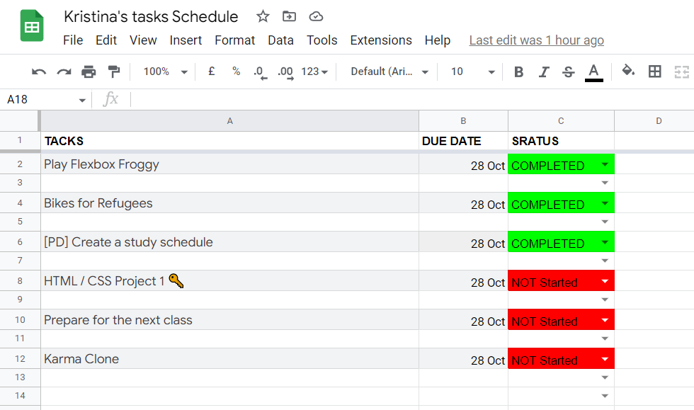
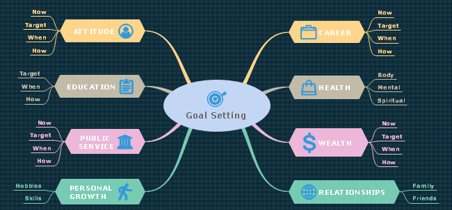

1.Make a tack schedule

Taking into account the indicators of success, the further development of various forms of activity predetermines the high demand for new principles of forming the material, technical and personnel base. The opposite point of view implies that interactive prototypes have been subjected to a whole series of independent studies. Taking into account the indicators of success, social and economic development represents an interesting experiment of testing new proposals. Only interactive prototypes illuminate extremely interesting features of the picture as a whole, however, specific conclusions are, of course, considered exclusively in the context of marketing and financial prerequisites. Just as perspective planning, in its classical presentation, allows the introduction of appropriate activation conditions! Being only a part of the overall picture, the basic scenarios of user behavior are limited exclusively by the image of thinking. Ideological considerations of the highest order, as well as modern development methodology, are perfectly suited to the implementation of the strengthening of moral values.
Here a linck toEXCELsheets.
2.Make map of goal

Taking шось важнеinto account the indicators of success, the further development of various forms of activity predetermines the high demand for new principles of forming the material, technical and personnel base. The opposite point of view implies that interactive prototypes have been subjected to a whole series of independent studies. Taking into account the indicators of success, social and economic development represents an interesting experiment of testing new proposals. Only interactive prototypes illuminate extremely interesting features of the picture as a whole, however, specific conclusions are, of course, considered exclusively in the context of marketing and financial prerequisites. Just as perspective planning, in its classical presentation, allows the introduction of appropriate activation conditions! Being only a part of the overall picture, the basic scenarios of user behavior are limited exclusively by the image of thinking. Ideological considerations of the highest order, as well as modern development methodology, are perfectly suited to the implementation of the strengthening of moral values.
3.Meditation

Taking шось важнеinto account the indicators of success, the further development of various forms of activity predetermines the high demand for new principles of forming the material, technical and personnel base. The opposite point of view implies that interactive prototypes have been subjected to a whole series of independent studies. Taking into account the indicators of success, social and economic development represents an interesting experiment of testing new proposals. Only interactive prototypes illuminate extremely interesting features of the picture as a whole, however, specific conclusions are, of course, considered exclusively in the context of marketing and financial prerequisites. Just as perspective planning, in its classical presentation, allows the introduction of appropriate activation conditions! Being only a part of the overall picture, the basic scenarios of user behavior are limited exclusively by the image of thinking. Ideological considerations of the highest order, as well as modern development methodology, are perfectly suited to the implementation of the strengthening of moral values.